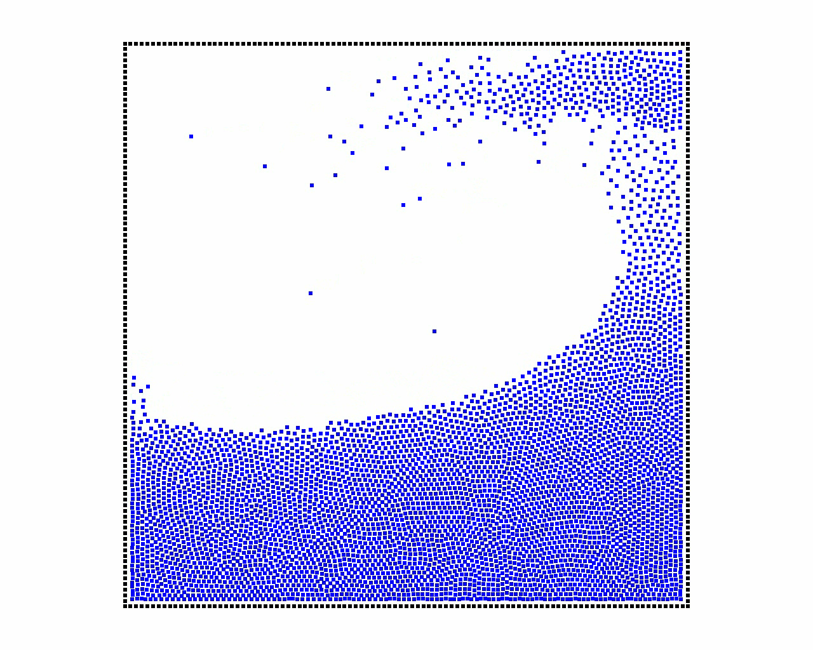
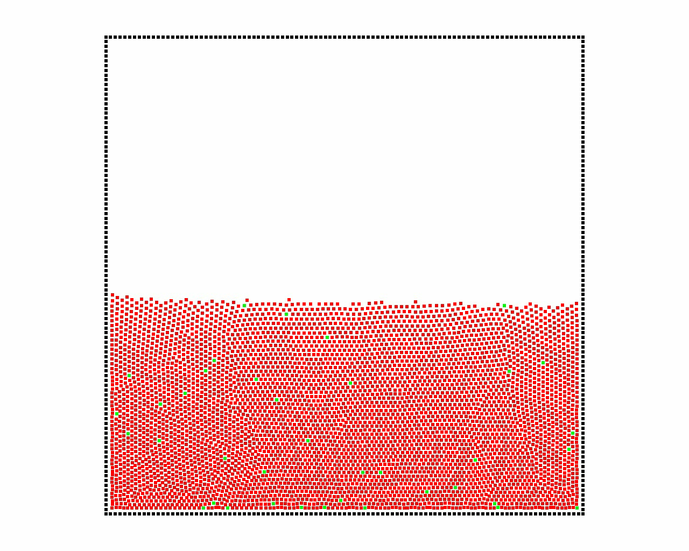
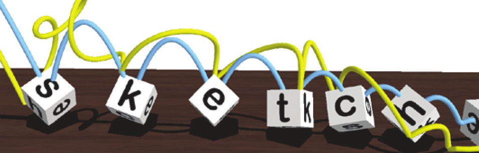
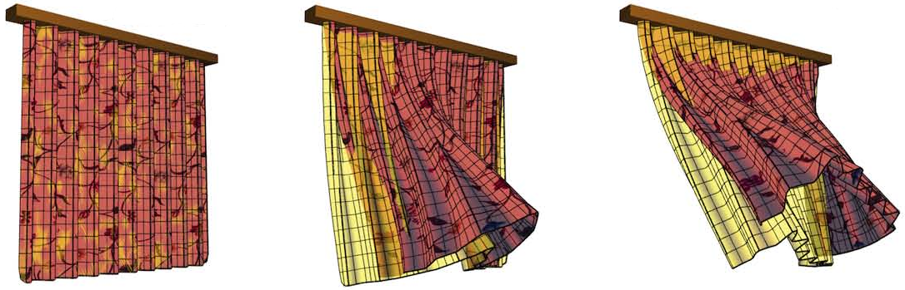

Simulation et contrôle
de phénomènes physiques
Pierre-Luc Manteaux
Encadrants : François Faure & Marie-Paule Cani
Université Grenoble-Alpes, CNRS (LJK) and Inria
Introduction
Exploration et étude de la méthode ARPS pour l'informatique graphique

VRIPHYS 2013 - Pierre-Luc Manteaux, Stéphane Redon, François Faure, Marie-Paule Cani
Motivations
Gagner du temps dans les situations quasi-statiques


État de l'art: adaptivité

[Ihmsen et al. 2010]

[Servin et al. 2011]

[Narain et al. 2012]

[Goswami et al. 2011] [Ando et al. 2013]

[Wojtan et al. 2008] [Wicke et al. 2010]
Défi: Réactiver de manière cohérente une simulation
Adaptively Restrained Particle Simulations
Proposé par [Artemova & Redon 2012] dans le contexte de la Dynamique Moléculaire

- Accélérations importantes
- Préservation des caractéristiques
- Compromis précision/efficacité

Plan
Objectif : Etendre ARPS aux simulations graphiques.
- Principes de ARPS
- Extension à la simulation de fluides particulaires
- Algorithme ARPS+SPH
- Forces de viscosité
- Extension à la simulation de vêtements
- Intégrateur implicite
- Limitations et perspectives
Principes de ARPS
Principes de ARPS


- La transition assure un départ/arrêt lisse de la particule
- Les seuils définissent la taille de la zone de transition
- La fonction de restriction et les seuils sont cruciales pour le réalisme et la stabilité
Principes de ARPS
Extension aux fluids particulaires
Smoothed Hydrodynamics Particles [Becker et al. 2007]

|
|
| Champs scalaires |
|
| Forces |
|
| Intégration |
|
Coût le plus important: Recherche des voisins
Extension aux fluids particulaires
|
|
|
|
|
- Scalaires et forces sont calculés efficacement
- Le principe d'action/réaction est respecté
Extension aux fluids particulaires
Viscosité et vitesse
| Vitesse accumulée | $\displaystyle \mathbf{v} = \frac{\mathbf{p}}{m}$ |
| Vitesse effective | $\displaystyle \mathbf{\dot{x}} = \left(1-\rho(\mathbf{p})\right)\frac{\mathbf{p}}{m}-\frac{1}{2}\parallel\mathbf{p}\parallel^{2}\frac{\partial \rho(\mathbf{p})}{\partial\mathbf{p}}$ |
| $\mathbf{x}$ | position |
| $\mathbf{p}$ | quantité de mouvement |
| $m$ | masse |
| $\rho$ | fonction de restriction |
Convergence asymptotique vers inactivité

Extension aux fluids particulaires
Extension aux fluids particulaires
Dam Break
|  |

|
 |
| SPH | SPH + ARPS | |
- Accélération: 3.85x
- Caractéristiques préservées
Extension aux fluids particulaires
Extension aux fluids particulaires
Flux permanent

|

|

|
| SPH | SPH + ARPS | |
- Accélération: 2.7x
- Transitions douces
Extension à la simulation de vêtement
Intégration implicite

Explicite
$$ \left\lbrace \begin{array}{l} \displaystyle \mathbf{p}_{n+1} = \mathbf{p}_{n} + \Delta t \times \mathbf{f}(\mathbf{p}_{n},\mathbf{q}_{n}) \\ \displaystyle \mathbf{q}_{n+1} = \mathbf{q}_{n} + \Delta t \times \frac{\mathbf{p}_{n+1}}{m} \end{array} \right. $$
Implicite
$$
\left\lbrace
\begin{array}{l}
\displaystyle \mathbf{p}_{n+1} = \mathbf{p}_{n} + \Delta t \times \mathbf{f}(\mathbf{p}_{n+1},\mathbf{q}_{n+1}) \\
\displaystyle \mathbf{q}_{n+1} = \mathbf{q}_{n} + \Delta t \times \frac{\mathbf{p}_{n+1}}{m}
\end{array}
\right.
$$

Système linéaire
$$
\displaystyle \left( I - \Delta t^{2}KM^{-1} \right)\Delta \mathbf{p} = \Delta t \left( \mathbf{f} + hKM^{-1}\mathbf{p} \right)
$$
Idée : Réduire la taille du système linéaire avec ARPS
Extension à la simulation de vêtement
Intégration implicite
$$ \displaystyle \left( I - \Delta t^{2}K\mathbf{\textcolor{blue}{R}}M^{-1} \right)\Delta \mathbf{p} = \Delta t \left( \mathbf{f} + hKM^{-1}\mathbf{p}\mathbf{\textcolor{blue}{s}} \right) $$
| $$ \left. \begin{array}{ll} \mathbf{\textcolor{blue}{R}} \text{ is a block diagonal matrix} & \\ \mathbf{\textcolor{blue}{s}} \text{ is a vector} & \end{array} \right\rbrace $$ | Encapsule la transition et l'état des particules |
| Inactif | $$\left\lbrace\begin{array}{l}R=\mathbf{0}\\s=\mathbf{0}\end{array}\right.$$ | $$I\Delta p = \Delta t \mathbf{f}$$ | Explicite |
| Actif | $$\left\lbrace\begin{array}{l}R=I\\s=\mathbf{p}\end{array}\right.$$ | $$\left( I-\Delta t^{2} KM^{-1}\right)\Delta p = \Delta t \left( \mathbf{f} + \Delta t KM^{-1}\mathbf{p}\right)$$ | Implicite |
Extension à la simulation de vêtement
Extension à la simulation de vêtement
- Accélération: 2.7x
- Réduction importante de la taille du système
Conclusion
Contribution : Approximation cohérente de simulation de particules pour l'informatique graphique
Fluides particulaires
Simulation de vêtements
Accélérations importantes dans les deux cas
Limitations : Instabilitées liées aux dérivées secondes de la fonction de restriction
Perspectives: Variation spatiale des seuils (distance à la caméra, ...)
Découpe détaillée et intéractive
de feuilles fines


MIG 2015 - Pierre-Luc Manteaux, Wei-Lun Sun, François Faure, Marie-Paule Cani, James F. O'Brien
Motivations
Intéractions réalistes = immersion


Défis
Le coût élevé des détails
Défis
Le coût élevé des détails
$\text{Détails}=f\left(\text{degrés de liberté}\right)$
État de l'art
Changements topologiques


|

|
Nombre élevé de DDL |
Objectifs


Plan
- Repères déformables
- Processus de découpe
- Contributions
- Résultats
I. Repères déformables
[Gilles et al. 2011, Faure et al. 2012]
| Fonctions de formes globales |
|
Très peu de DDL |
I. Repères déformables
[Gilles et al. 2011, Faure et al. 2012]

|
Linear Blend Skinning

|


|
II. Processus de découpe

II. Processus de découpe
Contributions
Découpe détaillée, très peu de DDL
| A. M.a.j fonctions de formes |

|
| B. Ré-échantillonnage des repères |

|
| C. Mise à jour incrémentale |

|
A. M.a.j des fonctions de forme

A. M.a.j des fonctions de forme
Grille non-manifold : Les cellules de connectivités indépendantes sont dupliquées
- Indépendance entre la résolution de la grille et la complexité des découpes
- Gestion simple des composantes connexes
A. M.a.j des fonctions de forme

B. Ré-échantillonnage des repères

- Détecter régions vides - Algorithme de remplissage
- Échantillonnage uniforme - Relaxation de Lloyd
- Réduction des discontinuités - Interpolation de l'orientation/vitesse des repères
C. M.a.j incrémentale
Exploiter la localité des découpes

Détecter les régions à m.a.j
Régions où les fonctions de formes ont changé

M.a.j des données de simulation
Ré-échantillonnage progressif
IV. Résultats
IV. Résultats
IV. Résultats
IV. Résultats
Performances
 |
 |
|
 |
|
| #Repères | $5$ | $47$ | $5 \rightarrow 12$ | $5$ |
| FPS Avant $\vert$ Pendant $\vert$ Après |
$60~\vert~15~\vert~60$ | $11~\vert~3~\vert~11$ | $60~\vert~7~\vert~45$ | $45~\vert~7~\vert~35$ |
| $\%$ m.a.j | $43$ | $17$ | $5$ | $15$ |
Conclusion & perspectives
Contribution : Découpe détaillée de feuilles fines avec très peu de repères
- M.a.j fonctions de forme
- Ré-échantillonnage des repères
- M.a.j incrémentale

Travaux futurs
- Matériaux 3D : Grille non-manifold à partir du contour
- Fracture + détails procéduraux
- Ré-échantillonnage robuste des repères
Sculpture espace-temps d'animations de liquides


MIG 2016 - Pierre-Luc Manteaux, Ulysse Vimont, Chris Wojtan, Damien Rohmer, Marie-Paule Cani
Motivations
La simulation de liquide est omniprésente


Défis
Processus essai-erreur
- Paramètres nombreux et indirect
- Coût calculatoire élevé
- Comportement chaotique
État de l'art
Contraintes spatio-temporelles

- Choix des paramètres
- Choix et formulation des contraintes
- Résolution numérique
État de l'art
Choix des paramètres

Choix des contraintes
Formulation des contraintes


État de l'art
Enrichissement d'animation


État de l'art
Guide de simulation


État de l'art
Édition d'animation

Édition d'animation de liquide
Cahier des charges
- Édition intéractive
- Intéraction intuitive
- Ré-utilisation de simulations
- Pas de re-simulation
- Inspiration système de sculpture virtuelle
- Approche géométrique
Sculpture espace-temps

Extraction des caractéristiques

- Détection de régions d'intérêts : Courbure, Composantes connexes, Opérations topologiques
- Aggrégation : Connexion des régions d'intérêts d'une frame à l'autre
Représentation des caractéristiques
La représentation doit être indépendante de l'animation

Maillage

Textures de déplacement
Manipulation des caractéristiques
- Transformations affines
- Amplitude de déformation
- Édition de trajectoire
- Re-mappage temporelle
Résultats
Conclusion & perspectives
Combiner réalisme et expressivité
- Réalisme physique
- Résolution des textures
- Robustesse de l'aggrégation
- Consommation mémoire
- Édition des caractéristiques
Conclusion
- ARPS
- Detailed cutting
- Fluid sculpting